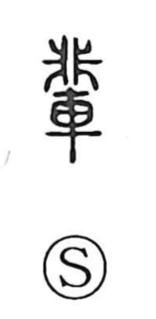

輩

Uncategorized
Kun: tomogara, nakama, yakara | On: hai
peer ・ fellow ・ cohort ・ generation
Explanation
輩 is a phono-semantic character: 車 evokes war chariots, while 非 supplies the sound hai—also seen in 俳 and 排—and originally depicts a fine-toothed comb with teeth aligned on both sides. Classical glosses explain 輩 as the mustering or setting out of army chariots; military texts count a hundred chariots as a single fighting unit, and that unit was called 輩. From this sense of an organized chariot cohort, the word broadened to mean those who belong to the same body or rank—fellows and peers within a group—hence terms like 同輩 “people of the same cohort,” and the native senses tomogara, nakama, and yakara.